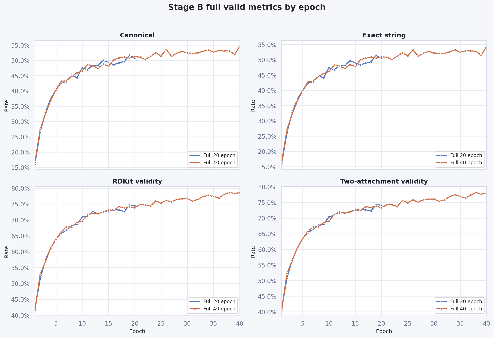
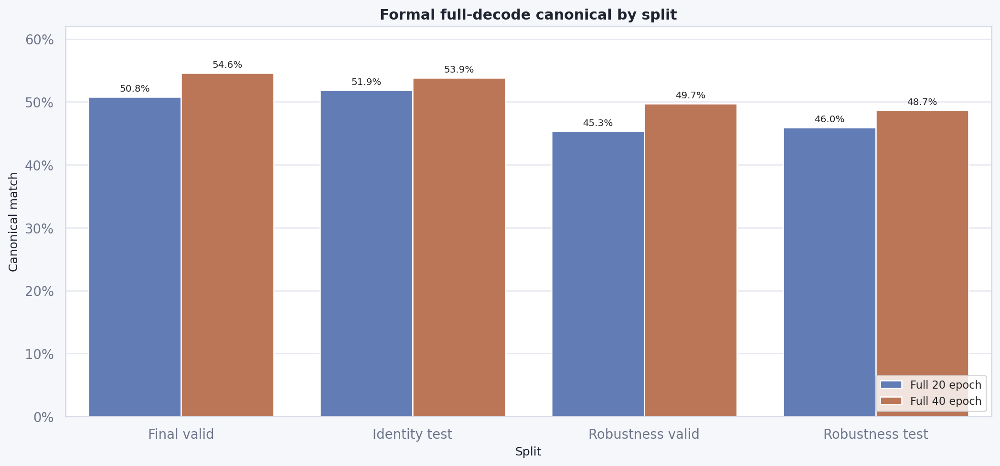
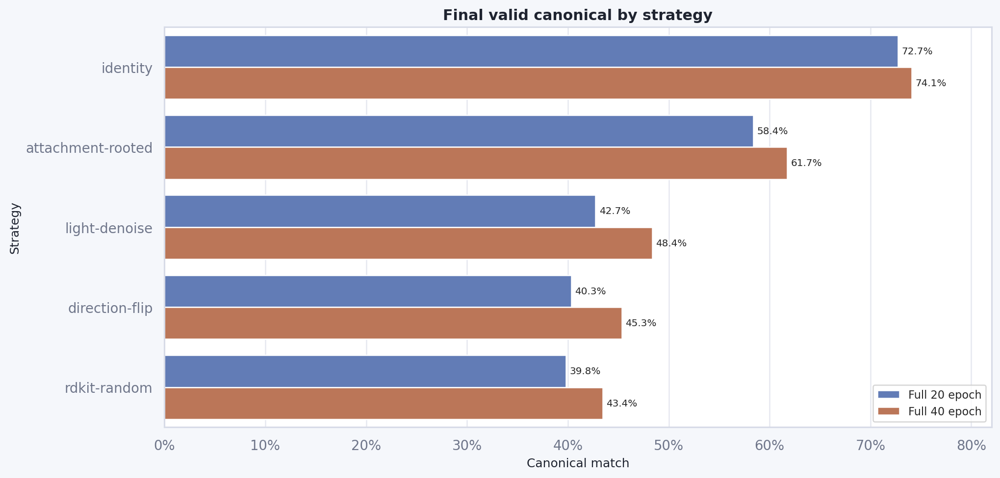
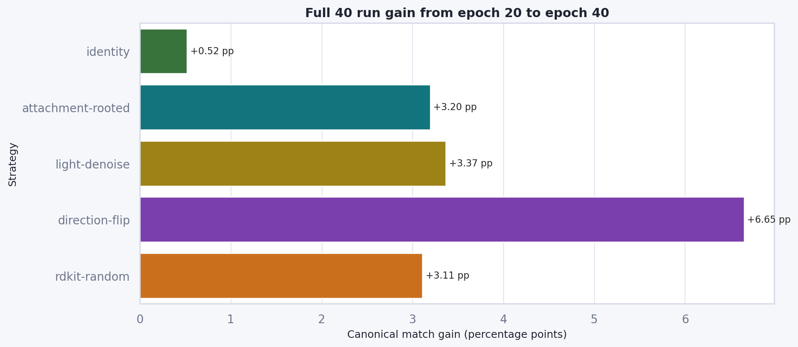
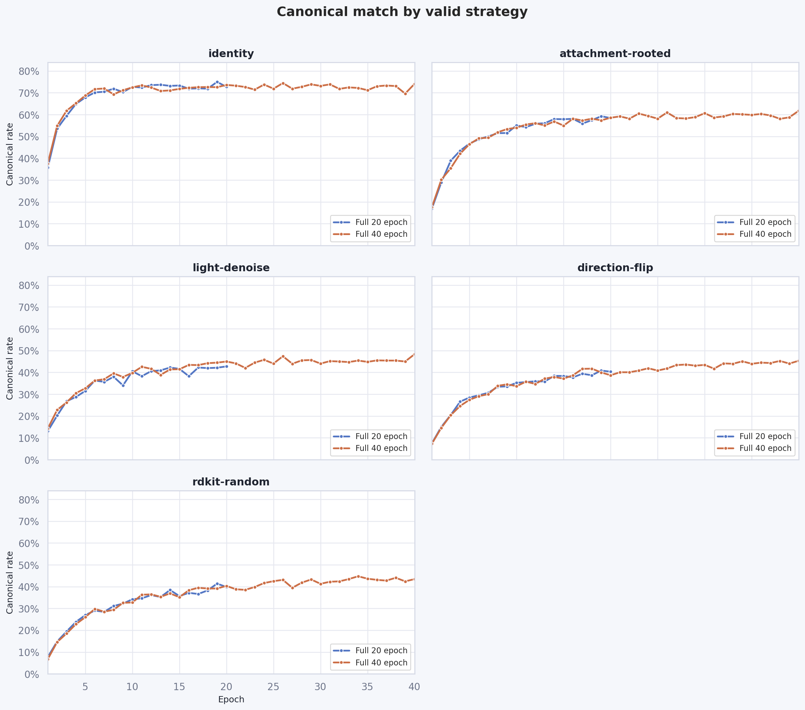

Executive Summary
- 40epoch full 的最终 valid canonical 达到 54.59%，比 20epoch full 最终结果高 +3.80 pp。这不是 loss 单调下降带来的简单收益：40epoch 的后半段主要继续抬升 canonical/validity，尤其是非 identity 视图。
- 40epoch run 自己从 epoch 20 到 epoch 40 仍有 +3.37 pp canonical 增益。说明延长训练对 full 策略仍有可见收益，而不是只来自 20epoch 与 40epoch 两次运行的随机差异。
- 收益集中在更难的增强视图。相对 20epoch final，direction-flip、light-denoise、rdkit-random 和 attachment-rooted 都继续增长；identity 也有小幅提升。
- 全量口径是干净的。两组配置均使用 v2 数据集，checkpoint/final/robustness 正式 decode cap 为 0/full；quick eval 仍保留 32 条轻量观察，但没有进入正式模型选择或最终评估。
策略与口径
当前报告只比较 Stage B full 策略。full 策略表示每个 epoch 都使用 v2 train 全量样本，不做 curriculum 渐进加载；20epoch 和 40epoch 的核心差异是训练轮数。正式 checkpoint valid decode、final valid/test decode 与 robustness valid/test decode 都使用完整评估集。
| Run | Dataset | Max epochs | Checkpoint decode cap | Final decode cap | Formal full decode | Monitor-only early stop | Epoch rows |
|---|---|---|---|---|---|---|---|
| Full 20 epoch | data/baselite_smiles_aug_v2/training_template_preview.jsonl | 20 | 0 | 0 | True | True | 20 |
| Full 40 epoch | data/baselite_smiles_aug_v2/training_template_preview.jsonl | 40 | 0 | 0 | True | True | 40 |

四个指标分面展示，避免四指标混在同一坐标轴上造成“图例多但线条难读”。40epoch run 在 epoch 20 之后 canonical 和 validity 继续抬升。

Final valid/test 与 robustness valid/test 都按完整样本数评估；40epoch 在四个正式 split 上均高于 20epoch。
正式 split 指标对比
40epoch 的提升不是只发生在 valid。identity test canonical 增加 +1.97 pp，robustness valid 增加 +4.40 pp，robustness test 增加 +2.72 pp。
| Split | 20 canonical | 40 canonical | Δ canonical | 20 exact | 40 exact | 20 RDKit valid | 40 RDKit valid |
|---|---|---|---|---|---|---|---|
| Final valid | 50.79% (2,941/5,790) | 54.59% (3,161/5,790) | +3.80 pp | 50.45% (2,921/5,790) | 54.39% (3,149/5,790) | 74.49% (4,313/5,790) | 78.57% (4,549/5,790) |
| Identity test | 51.88% (3,004/5,790) | 53.85% (3,118/5,790) | +1.97 pp | 51.61% (2,988/5,790) | 53.68% (3,108/5,790) | 73.99% (4,284/5,790) | 76.77% (4,445/5,790) |
| Robustness valid | 45.32% (2,099/4,632) | 49.72% (2,303/4,632) | +4.40 pp | 44.95% (2,082/4,632) | 49.48% (2,292/4,632) | 71.68% (3,320/4,632) | 76.27% (3,533/4,632) |
| Robustness test | 45.96% (2,129/4,632) | 48.68% (2,255/4,632) | +2.72 pp | 45.68% (2,116/4,632) | 48.49% (2,246/4,632) | 71.14% (3,295/4,632) | 74.44% (3,448/4,632) |

最终 40epoch 的各类 valid 视图都优于 20epoch，其中 light-denoise 与 direction-flip 的增幅最明显。

这张图只看 40epoch run 内部的后 20 个 epoch，减少不同 run 对比带来的解释噪声。
各 valid 视图的最终结果
后 20 个 epoch 对复杂输入视图更有帮助。40epoch final 相比 20epoch final 的 canonical 增益分别覆盖五个视图；其中非 identity 策略承担了大部分提升。
| Strategy | Full20 final e20 | Full40 e20 | Full40 final e40 | Δ final40-final20 | Δ full40 e40-e20 |
|---|---|---|---|---|---|
| identity 原始 identity 视图 | 72.71% (842/1,158) | 73.58% (852/1,158) | 74.09% (858/1,158) | +1.38 pp | +0.52 pp |
| attachment-rooted attachment-rooted 视图 | 58.38% (676/1,158) | 58.55% (678/1,158) | 61.74% (715/1,158) | +3.37 pp | +3.20 pp |
| light-denoise 轻量去噪视图 | 42.75% (495/1,158) | 44.99% (521/1,158) | 48.36% (560/1,158) | +5.61 pp | +3.37 pp |
| direction-flip 方向翻转视图 | 40.33% (467/1,158) | 38.69% (448/1,158) | 45.34% (525/1,158) | +5.01 pp | +6.65 pp |
| rdkit-random RDKit random SMILES 视图 | 39.81% (461/1,158) | 40.33% (467/1,158) | 43.44% (503/1,158) | +3.63 pp | +3.11 pp |

identity 早期快速到平台期；attachment-rooted 保持最高的非 identity 表现；rdkit-random、direction-flip 与 light-denoise 在 20 epoch 后仍继续获得增益。
逐 epoch macro valid 对比
epoch 1-20 的两次 full run 走势基本同向，40 run 后半段继续爬升。表中 delta 仅在同一 epoch 同时存在 20/40 两组结果时计算。
| Epoch | 20 macro canonical | 40 macro canonical | Δ macro | 20 loss | 40 loss |
|---|---|---|---|---|---|
| 1 | 16.17% | 16.67% | +0.50 pp | 0.4416 | 0.4405 |
| 2 | 26.51% | 27.39% | +0.88 pp | 0.2863 | 0.2852 |
| 3 | 32.99% | 32.45% | -0.54 pp | 0.2293 | 0.2326 |
| 4 | 37.50% | 37.03% | -0.47 pp | 0.2030 | 0.2098 |
| 5 | 40.31% | 40.28% | -0.03 pp | 0.1990 | 0.1955 |
| 6 | 42.73% | 43.20% | +0.47 pp | 0.1911 | 0.1844 |
| 7 | 43.04% | 43.35% | +0.31 pp | 0.1884 | 0.1903 |
| 8 | 45.16% | 44.78% | -0.38 pp | 0.1857 | 0.1869 |
| 9 | 44.34% | 45.91% | +1.57 pp | 0.1911 | 0.1884 |
| 10 | 47.53% | 46.53% | -1.00 pp | 0.1815 | 0.1933 |
| 11 | 47.01% | 48.69% | +1.68 pp | 0.1880 | 0.1832 |
| 12 | 48.38% | 48.24% | -0.14 pp | 0.1917 | 0.1893 |
| 13 | 48.34% | 47.43% | -0.92 pp | 0.1906 | 0.1936 |
| 14 | 50.03% | 48.81% | -1.23 pp | 0.1884 | 0.1943 |
| 15 | 49.36% | 48.08% | -1.28 pp | 0.1960 | 0.1958 |
| 16 | 48.60% | 50.17% | +1.57 pp | 0.1942 | 0.1865 |
| 17 | 49.22% | 50.85% | +1.62 pp | 0.2018 | 0.1865 |
| 18 | 49.64% | 51.16% | +1.52 pp | 0.1989 | 0.1904 |
| 19 | 51.71% | 50.69% | -1.02 pp | 0.1926 | 0.1901 |
| 20 | 50.79% | 51.23% | +0.43 pp | 0.1998 | 0.1936 |
| 21 | - | 51.07% | - | - | 0.1937 |
| 22 | - | 50.28% | - | - | 0.1921 |
| 23 | - | 51.40% | - | - | 0.1895 |
| 24 | - | 52.47% | - | - | 0.1883 |
| 25 | - | 51.47% | - | - | 0.1964 |
| 26 | - | 53.54% | - | - | 0.1902 |
| 27 | - | 51.40% | - | - | 0.1956 |
| 28 | - | 52.37% | - | - | 0.1925 |
| 29 | - | 52.94% | - | - | 0.1975 |
| 30 | - | 52.50% | - | - | 0.1965 |
| 31 | - | 52.31% | - | - | 0.1888 |
| 32 | - | 52.49% | - | - | 0.1989 |
| 33 | - | 52.97% | - | - | 0.1910 |
| 34 | - | 53.51% | - | - | 0.1949 |
| 35 | - | 52.68% | - | - | 0.2016 |
| 36 | - | 53.26% | - | - | 0.1947 |
| 37 | - | 53.07% | - | - | 0.1990 |
| 38 | - | 53.16% | - | - | 0.2017 |
| 39 | - | 51.95% | - | - | 0.2055 |
| 40 | - | 54.59% | - | - | 0.1929 |
每轮各类 valid 结果对比
下面两张表展开到每个 epoch、每个 valid 视图策略。第一张表对齐比较 epoch 1-20 的 20epoch run 与 40epoch run；第二张表列出 40epoch run 额外 epoch 21-40 的完整 strategy valid 结果。
Epoch 1-20：Full20 vs Full40 同 epoch 各策略 valid 指标
| Epoch | Strategy | 20 canonical | 40 canonical | Δ canonical | 20 exact | 40 exact | 20 RDKit | 40 RDKit | 20 two-att. | 40 two-att. |
|---|---|---|---|---|---|---|---|---|---|---|
| 1 | identity 原始 identity 视图 | 35.66% | 37.48% | +1.81 pp | 35.49% | 37.22% | 51.99% | 52.07% | 51.30% | 51.30% |
| 1 | attachment-rooted attachment-rooted 视图 | 16.93% | 17.53% | +0.60 pp | 16.58% | 17.18% | 41.36% | 41.11% | 39.90% | 39.72% |
| 1 | light-denoise 轻量去噪视图 | 13.04% | 14.25% | +1.21 pp | 13.04% | 14.25% | 40.76% | 40.50% | 39.81% | 39.38% |
| 1 | direction-flip 方向翻转视图 | 7.51% | 7.34% | -0.17 pp | 7.34% | 7.25% | 38.86% | 37.82% | 37.82% | 36.79% |
| 1 | rdkit-random RDKit random SMILES 视图 | 7.69% | 6.74% | -0.95 pp | 7.25% | 6.39% | 37.31% | 36.79% | 36.27% | 35.75% |
| 2 | identity 原始 identity 视图 | 53.54% | 54.84% | +1.30 pp | 53.54% | 54.84% | 67.27% | 66.84% | 66.93% | 66.67% |
| 2 | attachment-rooted attachment-rooted 视图 | 28.93% | 30.14% | +1.21 pp | 28.67% | 29.88% | 51.30% | 54.23% | 50.35% | 53.20% |
| 2 | light-denoise 轻量去噪视图 | 20.21% | 22.80% | +2.59 pp | 20.12% | 22.71% | 49.31% | 51.21% | 48.79% | 50.95% |
| 2 | direction-flip 方向翻转视图 | 15.03% | 14.59% | -0.43 pp | 14.34% | 14.16% | 43.26% | 46.46% | 42.57% | 45.77% |
| 2 | rdkit-random RDKit random SMILES 视图 | 14.85% | 14.59% | -0.26 pp | 14.16% | 14.16% | 46.03% | 45.68% | 45.25% | 44.73% |
| 3 | identity 原始 identity 视图 | 59.41% | 61.74% | +2.33 pp | 59.41% | 61.74% | 72.02% | 73.49% | 71.24% | 73.06% |
| 3 | attachment-rooted attachment-rooted 视图 | 38.86% | 35.41% | -3.45 pp | 38.69% | 35.32% | 58.46% | 57.77% | 57.77% | 56.99% |
| 3 | light-denoise 轻量去噪视图 | 26.77% | 26.25% | -0.52 pp | 26.68% | 26.08% | 57.17% | 55.70% | 56.30% | 55.53% |
| 3 | direction-flip 方向翻转视图 | 20.47% | 20.38% | -0.09 pp | 20.03% | 19.78% | 49.31% | 48.96% | 48.53% | 48.45% |
| 3 | rdkit-random RDKit random SMILES 视图 | 19.43% | 18.48% | -0.95 pp | 19.00% | 18.13% | 50.00% | 48.19% | 49.22% | 47.84% |
| 4 | identity 原始 identity 视图 | 64.85% | 65.20% | +0.35 pp | 64.85% | 65.20% | 77.12% | 76.34% | 76.77% | 76.25% |
| 4 | attachment-rooted attachment-rooted 视图 | 43.44% | 42.06% | -1.38 pp | 43.18% | 41.88% | 64.25% | 63.73% | 63.47% | 62.95% |
| 4 | light-denoise 轻量去噪视图 | 28.76% | 30.48% | +1.73 pp | 28.67% | 30.40% | 58.72% | 59.50% | 57.94% | 59.07% |
| 4 | direction-flip 方向翻转视图 | 26.60% | 24.61% | -1.99 pp | 25.91% | 23.58% | 53.28% | 53.28% | 52.68% | 52.59% |
| 4 | rdkit-random RDKit random SMILES 视图 | 23.83% | 22.80% | -1.04 pp | 23.40% | 21.93% | 52.33% | 53.02% | 51.38% | 52.07% |
| 5 | identity 原始 identity 视图 | 67.88% | 68.74% | +0.86 pp | 67.79% | 68.74% | 79.53% | 79.62% | 79.36% | 79.45% |
| 5 | attachment-rooted attachment-rooted 视图 | 46.72% | 46.46% | -0.26 pp | 46.55% | 46.29% | 67.36% | 65.98% | 67.01% | 65.46% |
| 5 | light-denoise 轻量去噪视图 | 31.52% | 32.73% | +1.21 pp | 31.43% | 32.56% | 62.78% | 61.57% | 62.35% | 61.31% |
| 5 | direction-flip 方向翻转视图 | 28.50% | 27.46% | -1.04 pp | 27.72% | 26.77% | 55.18% | 57.69% | 54.40% | 57.08% |
| 5 | rdkit-random RDKit random SMILES 视图 | 26.94% | 25.99% | -0.95 pp | 26.17% | 25.47% | 55.09% | 54.49% | 54.32% | 53.80% |
| 6 | identity 原始 identity 视图 | 70.12% | 71.68% | +1.55 pp | 69.95% | 71.24% | 81.87% | 81.95% | 81.61% | 81.78% |
| 6 | attachment-rooted attachment-rooted 视图 | 48.70% | 49.14% | +0.43 pp | 48.62% | 48.45% | 67.79% | 69.60% | 67.44% | 69.17% |
| 6 | light-denoise 轻量去噪视图 | 36.27% | 36.27% | +0.00 pp | 36.27% | 36.27% | 66.49% | 63.82% | 66.32% | 63.30% |
| 6 | direction-flip 方向翻转视图 | 29.53% | 29.10% | -0.43 pp | 28.67% | 28.32% | 56.04% | 58.20% | 55.79% | 57.69% |
| 6 | rdkit-random RDKit random SMILES 视图 | 29.02% | 29.79% | +0.78 pp | 28.50% | 29.45% | 56.39% | 57.43% | 55.70% | 56.99% |
| 7 | identity 原始 identity 视图 | 70.47% | 71.93% | +1.47 pp | 70.38% | 71.85% | 81.35% | 82.82% | 81.26% | 82.64% |
| 7 | attachment-rooted attachment-rooted 视图 | 50.00% | 49.40% | -0.60 pp | 49.65% | 48.96% | 69.43% | 69.95% | 68.91% | 69.43% |
| 7 | light-denoise 轻量去噪视图 | 35.66% | 36.87% | +1.21 pp | 35.49% | 36.87% | 65.37% | 66.75% | 65.28% | 66.06% |
| 7 | direction-flip 方向翻转视图 | 30.66% | 30.05% | -0.60 pp | 30.31% | 29.36% | 58.64% | 59.41% | 58.29% | 58.89% |
| 7 | rdkit-random RDKit random SMILES 视图 | 28.41% | 28.50% | +0.09 pp | 27.72% | 28.15% | 59.07% | 60.36% | 58.38% | 58.89% |
| 8 | identity 原始 identity 视图 | 71.85% | 69.26% | -2.59 pp | 71.76% | 69.08% | 83.42% | 82.21% | 83.07% | 81.95% |
| 8 | attachment-rooted attachment-rooted 视图 | 51.47% | 51.90% | +0.43 pp | 51.12% | 51.38% | 71.24% | 70.47% | 70.90% | 70.03% |
| 8 | light-denoise 轻量去噪视图 | 38.00% | 39.55% | +1.55 pp | 37.82% | 39.46% | 66.06% | 66.49% | 65.80% | 66.06% |
| 8 | direction-flip 方向翻转视图 | 33.42% | 33.85% | +0.43 pp | 32.82% | 33.59% | 60.28% | 60.88% | 59.33% | 60.28% |
| 8 | rdkit-random RDKit random SMILES 视图 | 31.09% | 29.36% | -1.73 pp | 30.40% | 29.02% | 60.36% | 58.64% | 59.50% | 58.03% |
| 9 | identity 原始 identity 视图 | 70.29% | 71.16% | +0.86 pp | 70.21% | 71.16% | 82.04% | 83.59% | 81.87% | 83.07% |
| 9 | attachment-rooted attachment-rooted 视图 | 51.55% | 53.37% | +1.81 pp | 51.12% | 53.02% | 71.16% | 71.85% | 70.64% | 71.42% |
| 9 | light-denoise 轻量去噪视图 | 34.02% | 37.91% | +3.89 pp | 33.94% | 37.82% | 65.46% | 66.15% | 65.46% | 65.80% |
| 9 | direction-flip 方向翻转视图 | 33.59% | 34.54% | +0.95 pp | 33.25% | 34.02% | 62.00% | 62.52% | 61.14% | 61.74% |
| 9 | rdkit-random RDKit random SMILES 视图 | 32.21% | 32.56% | +0.35 pp | 32.04% | 31.95% | 62.09% | 62.00% | 61.66% | 60.97% |
| 10 | identity 原始 identity 视图 | 72.71% | 72.45% | -0.26 pp | 72.63% | 72.37% | 84.11% | 83.59% | 83.77% | 83.25% |
| 10 | attachment-rooted attachment-rooted 视图 | 55.01% | 53.97% | -1.04 pp | 54.92% | 53.71% | 74.35% | 70.90% | 73.75% | 70.29% |
| 10 | light-denoise 轻量去噪视图 | 40.50% | 39.81% | -0.69 pp | 40.41% | 39.81% | 68.74% | 67.53% | 68.31% | 67.27% |
| 10 | direction-flip 方向翻转视图 | 35.23% | 33.68% | -1.55 pp | 35.06% | 32.82% | 64.68% | 63.56% | 63.90% | 62.52% |
| 10 | rdkit-random RDKit random SMILES 视图 | 34.20% | 32.73% | -1.47 pp | 34.02% | 32.04% | 62.52% | 62.61% | 62.26% | 61.83% |
| 11 | identity 原始 identity 视图 | 72.37% | 73.40% | +1.04 pp | 72.37% | 73.14% | 84.02% | 84.54% | 83.68% | 84.20% |
| 11 | attachment-rooted attachment-rooted 视图 | 54.23% | 55.44% | +1.21 pp | 53.80% | 55.01% | 73.92% | 73.23% | 73.49% | 73.06% |
| 11 | light-denoise 轻量去噪视图 | 38.26% | 42.57% | +4.32 pp | 38.08% | 42.40% | 69.26% | 69.86% | 68.91% | 69.69% |
| 11 | direction-flip 方向翻转视图 | 35.58% | 35.75% | +0.17 pp | 35.06% | 35.49% | 65.11% | 65.37% | 64.77% | 64.77% |
| 11 | rdkit-random RDKit random SMILES 视图 | 34.63% | 36.27% | +1.64 pp | 34.20% | 35.32% | 64.34% | 64.94% | 63.90% | 63.99% |
| 12 | identity 原始 identity 视图 | 73.49% | 72.37% | -1.12 pp | 73.40% | 72.28% | 84.46% | 84.20% | 84.37% | 83.85% |
| 12 | attachment-rooted attachment-rooted 视图 | 55.79% | 56.04% | +0.26 pp | 55.35% | 55.79% | 75.65% | 75.04% | 75.22% | 74.78% |
| 12 | light-denoise 轻量去噪视图 | 40.59% | 41.62% | +1.04 pp | 40.41% | 41.62% | 70.81% | 70.03% | 70.38% | 69.60% |
| 12 | direction-flip 方向翻转视图 | 35.92% | 34.72% | -1.21 pp | 35.41% | 34.02% | 66.41% | 66.49% | 65.89% | 66.06% |
| 12 | rdkit-random RDKit random SMILES 视图 | 36.10% | 36.44% | +0.35 pp | 35.75% | 35.84% | 65.28% | 64.94% | 64.59% | 64.42% |
| 13 | identity 原始 identity 视图 | 73.66% | 70.81% | -2.85 pp | 73.58% | 70.73% | 84.80% | 83.42% | 84.80% | 83.16% |
| 13 | attachment-rooted attachment-rooted 视图 | 56.04% | 55.01% | -1.04 pp | 55.70% | 54.66% | 74.18% | 76.42% | 73.92% | 76.17% |
| 13 | light-denoise 轻量去噪视图 | 40.93% | 38.86% | -2.07 pp | 40.93% | 38.86% | 71.85% | 68.48% | 71.42% | 68.31% |
| 13 | direction-flip 方向翻转视图 | 35.84% | 37.13% | +1.30 pp | 35.49% | 36.70% | 64.16% | 66.41% | 63.64% | 65.98% |
| 13 | rdkit-random RDKit random SMILES 视图 | 35.23% | 35.32% | +0.09 pp | 35.06% | 35.06% | 64.51% | 65.20% | 63.90% | 64.77% |
| 14 | identity 原始 identity 视图 | 73.14% | 71.07% | -2.07 pp | 73.06% | 70.98% | 84.54% | 83.85% | 84.28% | 83.51% |
| 14 | attachment-rooted attachment-rooted 视图 | 57.94% | 56.82% | -1.12 pp | 57.43% | 56.39% | 75.04% | 75.65% | 74.70% | 75.47% |
| 14 | light-denoise 轻量去噪视图 | 42.23% | 41.36% | -0.86 pp | 42.23% | 41.36% | 71.85% | 71.07% | 71.50% | 70.38% |
| 14 | direction-flip 方向翻转视图 | 38.43% | 37.91% | -0.52 pp | 37.74% | 36.96% | 65.28% | 66.41% | 64.51% | 66.06% |
| 14 | rdkit-random RDKit random SMILES 视图 | 38.43% | 36.87% | -1.55 pp | 37.91% | 36.36% | 66.41% | 65.46% | 65.37% | 65.03% |
| 15 | identity 原始 identity 视图 | 73.32% | 71.76% | -1.55 pp | 73.06% | 71.68% | 84.89% | 84.80% | 84.72% | 84.11% |
| 15 | attachment-rooted attachment-rooted 视图 | 57.86% | 54.92% | -2.94 pp | 57.51% | 54.75% | 76.08% | 74.35% | 75.82% | 73.92% |
| 15 | light-denoise 轻量去噪视图 | 41.62% | 41.45% | -0.17 pp | 41.54% | 41.19% | 71.76% | 70.98% | 71.59% | 70.64% |
| 15 | direction-flip 方向翻转视图 | 38.34% | 37.13% | -1.21 pp | 37.82% | 36.61% | 65.80% | 68.13% | 65.46% | 67.62% |
| 15 | rdkit-random RDKit random SMILES 视图 | 35.66% | 35.15% | -0.52 pp | 35.32% | 34.80% | 65.98% | 67.62% | 65.28% | 67.01% |
| 16 | identity 原始 identity 视图 | 71.85% | 72.28% | +0.43 pp | 71.76% | 72.28% | 84.63% | 84.37% | 84.28% | 84.11% |
| 16 | attachment-rooted attachment-rooted 视图 | 58.03% | 58.12% | +0.09 pp | 57.43% | 58.03% | 77.29% | 74.61% | 76.77% | 74.18% |
| 16 | light-denoise 轻量去噪视图 | 38.26% | 43.44% | +5.18 pp | 38.26% | 43.35% | 70.64% | 72.37% | 70.38% | 71.68% |
| 16 | direction-flip 方向翻转视图 | 37.74% | 38.69% | +0.95 pp | 37.39% | 38.51% | 66.58% | 66.23% | 66.15% | 65.63% |
| 16 | rdkit-random RDKit random SMILES 视图 | 37.13% | 38.34% | +1.21 pp | 36.70% | 38.00% | 66.93% | 67.53% | 65.98% | 66.84% |
| 17 | identity 原始 identity 视图 | 72.02% | 72.54% | +0.52 pp | 72.02% | 72.37% | 84.63% | 84.46% | 84.02% | 84.02% |
| 17 | attachment-rooted attachment-rooted 视图 | 55.87% | 57.25% | +1.38 pp | 55.53% | 56.82% | 74.18% | 76.86% | 73.66% | 76.17% |
| 17 | light-denoise 轻量去噪视图 | 42.23% | 43.35% | +1.12 pp | 42.14% | 43.26% | 72.28% | 72.11% | 72.11% | 71.59% |
| 17 | direction-flip 方向翻转视图 | 39.38% | 41.62% | +2.25 pp | 38.60% | 41.28% | 67.88% | 69.08% | 67.44% | 68.74% |
| 17 | rdkit-random RDKit random SMILES 视图 | 36.61% | 39.46% | +2.85 pp | 36.36% | 39.12% | 66.58% | 68.31% | 65.98% | 67.79% |
| 18 | identity 原始 identity 视图 | 71.85% | 72.63% | +0.78 pp | 71.76% | 72.54% | 83.94% | 84.54% | 83.68% | 84.20% |
| 18 | attachment-rooted attachment-rooted 视图 | 57.43% | 58.12% | +0.69 pp | 57.25% | 57.69% | 75.99% | 75.99% | 75.56% | 75.47% |
| 18 | light-denoise 轻量去噪视图 | 41.97% | 44.21% | +2.25 pp | 41.97% | 44.13% | 70.90% | 72.02% | 70.73% | 71.85% |
| 18 | direction-flip 方向翻转视图 | 38.69% | 41.71% | +3.02 pp | 38.17% | 41.11% | 66.15% | 69.52% | 65.89% | 69.08% |
| 18 | rdkit-random RDKit random SMILES 视图 | 38.26% | 39.12% | +0.86 pp | 37.56% | 38.95% | 66.23% | 67.18% | 65.89% | 66.67% |
| 19 | identity 原始 identity 视图 | 74.96% | 72.54% | -2.42 pp | 74.78% | 72.37% | 85.58% | 84.63% | 85.49% | 84.02% |
| 19 | attachment-rooted attachment-rooted 视图 | 59.24% | 57.34% | -1.90 pp | 58.98% | 56.99% | 75.91% | 76.77% | 75.56% | 76.51% |
| 19 | light-denoise 轻量去噪视图 | 42.14% | 44.47% | +2.33 pp | 42.06% | 44.47% | 72.88% | 73.92% | 72.63% | 73.66% |
| 19 | direction-flip 方向翻转视图 | 40.85% | 39.98% | -0.86 pp | 40.59% | 39.72% | 69.52% | 67.53% | 69.08% | 67.27% |
| 19 | rdkit-random RDKit random SMILES 视图 | 41.36% | 39.12% | -2.25 pp | 40.93% | 39.03% | 69.34% | 67.96% | 68.91% | 67.79% |
| 20 | identity 原始 identity 视图 | 72.71% | 73.58% | +0.86 pp | 72.45% | 73.49% | 85.75% | 85.58% | 85.41% | 85.06% |
| 20 | attachment-rooted attachment-rooted 视图 | 58.38% | 58.55% | +0.17 pp | 57.94% | 58.20% | 76.68% | 75.47% | 76.51% | 75.04% |
| 20 | light-denoise 轻量去噪视图 | 42.75% | 44.99% | +2.25 pp | 42.49% | 44.99% | 71.33% | 72.80% | 70.98% | 72.02% |
| 20 | direction-flip 方向翻转视图 | 40.33% | 38.69% | -1.64 pp | 39.98% | 38.43% | 70.64% | 68.31% | 69.95% | 67.88% |
| 20 | rdkit-random RDKit random SMILES 视图 | 39.81% | 40.33% | +0.52 pp | 39.38% | 39.72% | 68.05% | 67.18% | 67.79% | 66.58% |
Epoch 21-40：Full40 后半段各策略 valid 指标
| Epoch | Strategy | 40 canonical | 40 exact | 40 RDKit | 40 two-att. | Failed |
|---|---|---|---|---|---|---|
| 21 | identity 原始 identity 视图 | 73.23% | 73.23% | 84.89% | 84.46% | 310 |
| 21 | attachment-rooted attachment-rooted 视图 | 59.15% | 58.89% | 76.77% | 76.25% | 473 |
| 21 | light-denoise 轻量去噪视图 | 44.13% | 44.13% | 74.44% | 74.18% | 647 |
| 21 | direction-flip 方向翻转视图 | 40.07% | 39.64% | 69.78% | 69.08% | 694 |
| 21 | rdkit-random RDKit random SMILES 视图 | 38.77% | 38.26% | 68.39% | 67.53% | 709 |
| 22 | identity 原始 identity 视图 | 72.63% | 72.54% | 85.15% | 84.89% | 317 |
| 22 | attachment-rooted attachment-rooted 视图 | 58.12% | 57.86% | 77.03% | 76.68% | 485 |
| 22 | light-denoise 轻量去噪视图 | 42.06% | 41.88% | 73.40% | 72.88% | 671 |
| 22 | direction-flip 方向翻转视图 | 40.07% | 39.81% | 69.08% | 68.65% | 694 |
| 22 | rdkit-random RDKit random SMILES 视图 | 38.51% | 38.43% | 68.65% | 68.48% | 712 |
| 23 | identity 原始 identity 视图 | 71.42% | 71.24% | 83.77% | 83.25% | 331 |
| 23 | attachment-rooted attachment-rooted 视图 | 60.45% | 60.28% | 78.84% | 78.15% | 458 |
| 23 | light-denoise 轻量去噪视图 | 44.47% | 44.30% | 73.32% | 72.80% | 643 |
| 23 | direction-flip 方向翻转视图 | 40.85% | 40.76% | 68.57% | 68.05% | 685 |
| 23 | rdkit-random RDKit random SMILES 视图 | 39.81% | 39.46% | 67.27% | 66.41% | 697 |
| 24 | identity 原始 identity 视图 | 73.75% | 73.75% | 86.01% | 86.01% | 304 |
| 24 | attachment-rooted attachment-rooted 视图 | 59.33% | 59.07% | 77.63% | 77.29% | 471 |
| 24 | light-denoise 轻量去噪视图 | 45.77% | 45.60% | 74.78% | 74.61% | 628 |
| 24 | direction-flip 方向翻转视图 | 41.88% | 41.62% | 70.81% | 70.55% | 673 |
| 24 | rdkit-random RDKit random SMILES 视图 | 41.62% | 41.45% | 70.64% | 70.12% | 676 |
| 25 | identity 原始 identity 视图 | 71.85% | 71.76% | 85.23% | 85.15% | 326 |
| 25 | attachment-rooted attachment-rooted 视图 | 58.12% | 58.03% | 77.63% | 77.20% | 485 |
| 25 | light-denoise 轻量去噪视图 | 44.04% | 43.87% | 74.35% | 74.01% | 648 |
| 25 | direction-flip 方向翻转视图 | 40.85% | 40.85% | 68.91% | 68.48% | 685 |
| 25 | rdkit-random RDKit random SMILES 视图 | 42.49% | 42.23% | 70.55% | 69.95% | 666 |
| 26 | identity 原始 identity 视图 | 74.44% | 74.18% | 86.53% | 86.27% | 296 |
| 26 | attachment-rooted attachment-rooted 视图 | 60.97% | 60.62% | 78.24% | 77.98% | 452 |
| 26 | light-denoise 轻量去噪视图 | 47.41% | 47.24% | 74.78% | 74.53% | 609 |
| 26 | direction-flip 方向翻转视图 | 41.80% | 41.11% | 70.55% | 70.12% | 674 |
| 26 | rdkit-random RDKit random SMILES 视图 | 43.09% | 42.83% | 70.55% | 70.21% | 659 |
| 27 | identity 原始 identity 视图 | 71.85% | 71.76% | 84.37% | 84.20% | 326 |
| 27 | attachment-rooted attachment-rooted 视图 | 58.38% | 58.12% | 79.19% | 78.50% | 482 |
| 27 | light-denoise 轻量去噪视图 | 43.96% | 43.87% | 73.40% | 73.06% | 649 |
| 27 | direction-flip 方向翻转视图 | 43.35% | 43.09% | 72.71% | 71.85% | 656 |
| 27 | rdkit-random RDKit random SMILES 视图 | 39.46% | 39.21% | 68.83% | 67.88% | 701 |
| 28 | identity 原始 identity 视图 | 72.71% | 72.63% | 86.36% | 86.10% | 316 |
| 28 | attachment-rooted attachment-rooted 视图 | 58.20% | 57.94% | 77.20% | 76.51% | 484 |
| 28 | light-denoise 轻量去噪视图 | 45.51% | 45.42% | 75.82% | 75.56% | 631 |
| 28 | direction-flip 方向翻转视图 | 43.61% | 43.18% | 72.63% | 71.93% | 653 |
| 28 | rdkit-random RDKit random SMILES 视图 | 41.80% | 41.54% | 70.29% | 69.78% | 674 |
| 29 | identity 原始 identity 视图 | 73.83% | 73.66% | 85.92% | 85.49% | 303 |
| 29 | attachment-rooted attachment-rooted 视图 | 58.81% | 58.64% | 77.37% | 77.20% | 477 |
| 29 | light-denoise 轻量去噪视图 | 45.68% | 45.68% | 76.68% | 75.99% | 629 |
| 29 | direction-flip 方向翻转视图 | 43.09% | 42.75% | 72.11% | 71.59% | 659 |
| 29 | rdkit-random RDKit random SMILES 视图 | 43.26% | 43.01% | 71.24% | 70.29% | 657 |
| 30 | identity 原始 identity 视图 | 73.14% | 72.88% | 85.23% | 84.80% | 311 |
| 30 | attachment-rooted attachment-rooted 视图 | 60.62% | 60.45% | 79.27% | 78.58% | 456 |
| 30 | light-denoise 轻量去噪视图 | 44.04% | 43.78% | 75.82% | 75.56% | 648 |
| 30 | direction-flip 方向翻转视图 | 43.44% | 43.18% | 72.71% | 71.85% | 655 |
| 30 | rdkit-random RDKit random SMILES 视图 | 41.28% | 40.93% | 70.90% | 69.78% | 680 |
| 31 | identity 原始 identity 视图 | 73.83% | 73.75% | 86.01% | 85.66% | 303 |
| 31 | attachment-rooted attachment-rooted 视图 | 58.64% | 58.29% | 77.89% | 77.46% | 479 |
| 31 | light-denoise 轻量去噪视图 | 45.16% | 45.16% | 73.32% | 73.06% | 635 |
| 31 | direction-flip 方向翻转视图 | 41.71% | 41.45% | 71.42% | 70.64% | 675 |
| 31 | rdkit-random RDKit random SMILES 视图 | 42.23% | 41.88% | 70.81% | 69.95% | 669 |
| 32 | identity 原始 identity 视图 | 71.76% | 71.42% | 85.15% | 84.63% | 327 |
| 32 | attachment-rooted attachment-rooted 视图 | 59.15% | 58.72% | 77.98% | 77.72% | 473 |
| 32 | light-denoise 轻量去噪视图 | 44.99% | 44.82% | 74.44% | 74.18% | 637 |
| 32 | direction-flip 方向翻转视图 | 44.13% | 43.61% | 72.54% | 71.68% | 647 |
| 32 | rdkit-random RDKit random SMILES 视图 | 42.40% | 41.97% | 72.37% | 71.07% | 667 |
| 33 | identity 原始 identity 视图 | 72.45% | 72.45% | 85.66% | 85.32% | 319 |
| 33 | attachment-rooted attachment-rooted 视图 | 60.28% | 59.84% | 78.07% | 77.46% | 460 |
| 33 | light-denoise 轻量去噪视图 | 44.73% | 44.73% | 75.22% | 74.87% | 640 |
| 33 | direction-flip 方向翻转视图 | 43.96% | 43.18% | 73.58% | 73.58% | 649 |
| 33 | rdkit-random RDKit random SMILES 视图 | 43.44% | 43.01% | 74.09% | 73.40% | 655 |
| 34 | identity 原始 identity 视图 | 72.19% | 72.11% | 84.97% | 84.72% | 322 |
| 34 | attachment-rooted attachment-rooted 视图 | 60.10% | 59.84% | 79.02% | 78.93% | 462 |
| 34 | light-denoise 轻量去噪视图 | 45.42% | 45.34% | 75.99% | 75.65% | 632 |
| 34 | direction-flip 方向翻转视图 | 45.08% | 44.65% | 75.30% | 75.13% | 636 |
| 34 | rdkit-random RDKit random SMILES 视图 | 44.73% | 44.30% | 73.49% | 73.14% | 640 |
| 35 | identity 原始 identity 视图 | 71.16% | 70.98% | 85.41% | 85.06% | 334 |
| 35 | attachment-rooted attachment-rooted 视图 | 59.84% | 59.50% | 79.27% | 78.93% | 465 |
| 35 | light-denoise 轻量去噪视图 | 44.82% | 44.73% | 76.08% | 75.65% | 639 |
| 35 | direction-flip 方向翻转视图 | 43.96% | 43.61% | 73.06% | 72.63% | 649 |
| 35 | rdkit-random RDKit random SMILES 视图 | 43.61% | 43.44% | 73.23% | 72.71% | 653 |
| 36 | identity 原始 identity 视图 | 72.97% | 72.71% | 85.49% | 85.41% | 313 |
| 36 | attachment-rooted attachment-rooted 视图 | 60.28% | 59.84% | 78.41% | 77.72% | 460 |
| 36 | light-denoise 轻量去噪视图 | 45.51% | 45.42% | 75.73% | 75.56% | 631 |
| 36 | direction-flip 方向翻转视图 | 44.47% | 43.96% | 72.71% | 72.19% | 643 |
| 36 | rdkit-random RDKit random SMILES 视图 | 43.09% | 42.83% | 72.19% | 71.16% | 659 |
| 37 | identity 原始 identity 视图 | 73.32% | 73.14% | 86.79% | 86.27% | 309 |
| 37 | attachment-rooted attachment-rooted 视图 | 59.59% | 59.41% | 79.79% | 79.45% | 468 |
| 37 | light-denoise 轻量去噪视图 | 45.42% | 45.42% | 75.99% | 75.56% | 632 |
| 37 | direction-flip 方向翻转视图 | 44.30% | 44.04% | 73.75% | 72.63% | 645 |
| 37 | rdkit-random RDKit random SMILES 视图 | 42.75% | 42.49% | 73.66% | 73.32% | 663 |
| 38 | identity 原始 identity 视图 | 73.06% | 72.80% | 86.70% | 86.44% | 312 |
| 38 | attachment-rooted attachment-rooted 视图 | 58.03% | 57.69% | 79.27% | 78.76% | 486 |
| 38 | light-denoise 轻量去噪视图 | 45.42% | 45.25% | 76.68% | 76.42% | 632 |
| 38 | direction-flip 方向翻转视图 | 45.25% | 44.73% | 75.22% | 74.70% | 634 |
| 38 | rdkit-random RDKit random SMILES 视图 | 44.04% | 43.52% | 75.30% | 74.78% | 648 |
| 39 | identity 原始 identity 视图 | 69.60% | 69.26% | 86.18% | 85.84% | 352 |
| 39 | attachment-rooted attachment-rooted 视图 | 58.72% | 57.77% | 80.83% | 79.79% | 478 |
| 39 | light-denoise 轻量去噪视图 | 44.99% | 44.65% | 76.08% | 75.39% | 637 |
| 39 | direction-flip 方向翻转视图 | 44.04% | 43.61% | 73.58% | 72.88% | 648 |
| 39 | rdkit-random RDKit random SMILES 视图 | 42.40% | 41.97% | 75.13% | 74.35% | 667 |
| 40 | identity 原始 identity 视图 | 74.09% | 74.01% | 87.74% | 87.65% | 300 |
| 40 | attachment-rooted attachment-rooted 视图 | 61.74% | 61.31% | 80.22% | 79.97% | 443 |
| 40 | light-denoise 轻量去噪视图 | 48.36% | 48.36% | 76.77% | 76.42% | 598 |
| 40 | direction-flip 方向翻转视图 | 45.34% | 45.08% | 74.87% | 74.53% | 633 |
| 40 | rdkit-random RDKit random SMILES 视图 | 43.44% | 43.18% | 73.23% | 72.19% | 655 |
Caveats and next checks
- 20epoch 与 40epoch 是两个训练输出目录的对比；40epoch run 内部的 epoch20→epoch40 增益更适合作为“延长训练是否有效”的主要证据。
- 当前报告只覆盖 Stage B full；如果要做最终策略选择，还需要等 Stage B curriculum 40epoch 训练完成后用同一报告结构横向比较。
- root 级别 final 指标来自 `eval_metrics.json` 与 identity/robustness eval JSON；逐 epoch 指标来自 `epoch_metrics.jsonl`，每个 checkpoint 的 `sample_count=5790`、`decoded_sample_count=5790`。
Report artifacts
reports/stage_b_restore_aug_v2_full_20epoch_artifactsreports/stage_b_restore_aug_v2_full_40epoch_artifacts_remotereports/stage_b_restore_aug_v2_full_20_vs_40epoch_epoch_strategy_canonical.csvreports/stage_b_restore_aug_v2_full_20_vs_40epoch_epoch_strategy_metrics_detail.csv